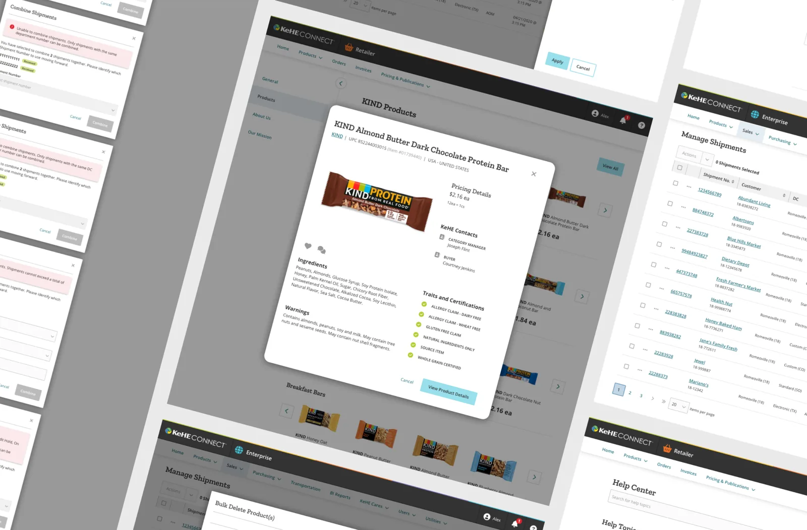
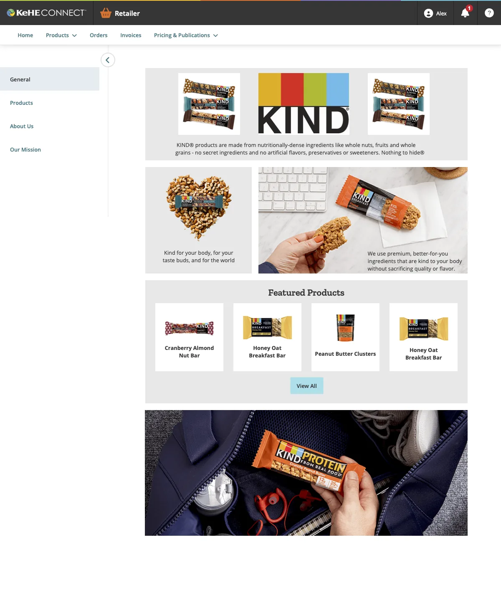
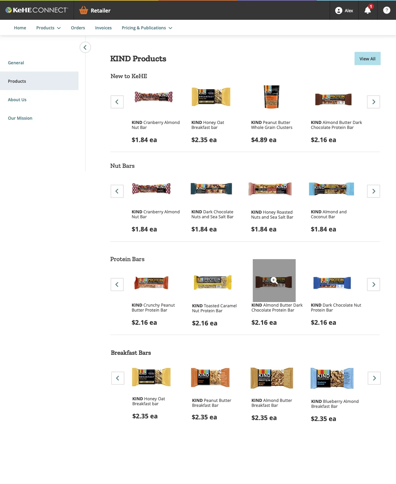
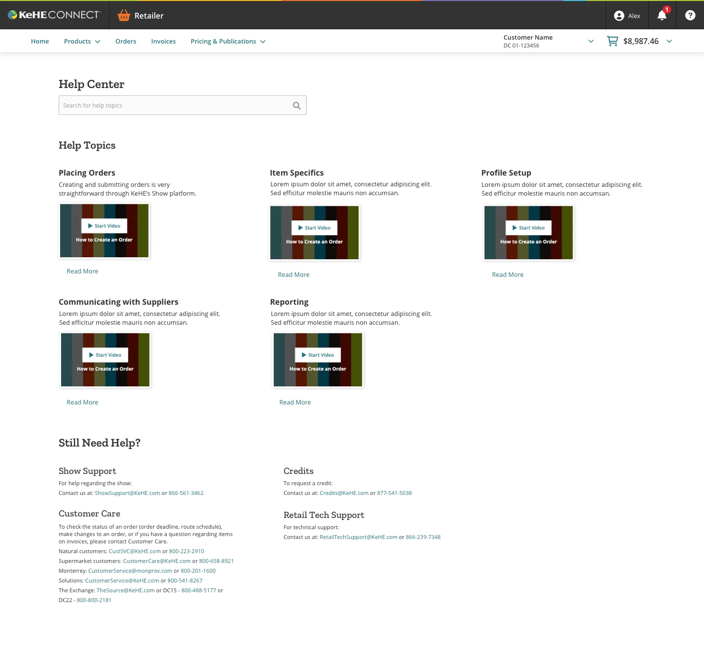
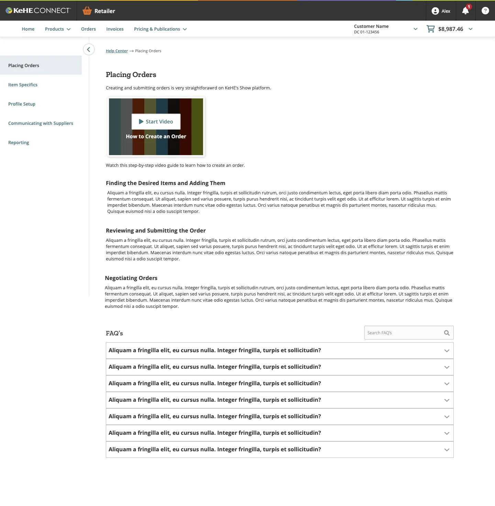

<!--
  KeHE Distributors / Professional Work
  Compact professional-work entry (third format: smaller than the showcases).
  Centerpiece: the shipped design decision. Visuals as evidence, not heroes.
  Broken .mov walkthroughs from the old page intentionally omitted; the two-direction
  comparison is presented as an editorial text block instead.
  Warm portfolio theme. Same class names as the other pages.
-->
<meta charset="utf-8"/>
<meta content="width=device-width, initial-scale=1" name="viewport"/>
<title>KeHE Distributors / Professional Work</title>
<link href="https://fonts.googleapis.com" rel="preconnect"/>
<link crossorigin="" href="https://fonts.gstatic.com" rel="preconnect"/>
<link href="https://fonts.googleapis.com/css2?family=Playfair+Display:wght@500;600;700&amp;family=Inter:wght@400;600;800&amp;display=swap" rel="stylesheet"/>
<style>
  :root {
    --canvas: #F5F2EE;
    --ink: #141414;
    --slate: #5D737E;
    --olive: #707A5E;
    --warm-gray: #8D8D8D;
    --link-hover: #51656F;   /* slate, darkened to clear AA on canvas and field */
    --obsidian: #1A1A1A;
    --field: #EBE8E4;
    --hairline: #D8D3CB;
    --muted: #4C4A47;

    --container-max: 1200px;
    --gutter: 32px;
    --section-pad: 80px;
    --stack-sm: 8px;
    --stack-md: 16px;
    --stack-lg: 48px;
  }

  * { box-sizing: border-box; }
  /* The nav is fixed at 68px, and nothing offset the anchor targets, so every in-page jump
     (#work, #about, #contact, and the case-study nav links back to index.html#work) landed
     the target flush at the viewport top, underneath the nav. scroll-padding-top on the
     scroll container fixes all of them at once; per-element scroll-margin would need adding
     to every new anchor. 88px is the nav plus 20px of air. */
  html { scroll-behavior: smooth; scroll-padding-top: 88px; }
  body { margin: 0; background: var(--canvas); color: var(--ink); font-family: "Inter", sans-serif; -webkit-font-smoothing: antialiased; font-size: 16px; line-height: 26px; }
  img { display: block; max-width: 100%; }

  .padding-global { padding-left: var(--gutter); padding-right: var(--gutter); }
  .container-large { max-width: var(--container-max); margin: 0 auto; width: 100%; }

  .section { padding-top: var(--section-pad); padding-bottom: var(--section-pad); }
  .section--flush-top { padding-top: 0; }

  .display-name { font-family: "Inter", sans-serif; font-weight: 800; font-size: 80px; line-height: 0.98; letter-spacing: -0.02em; text-transform: uppercase; margin: 0; }
  .statement { font-family: "Playfair Display", serif; font-weight: 600; font-size: 44px; line-height: 52px; margin: 0; }
  /* HEADLINES ARE SANS. Playfair stays for the display and editorial moments — the 44px hero
     statement, pull quotes, stat numbers — but not for headlines, which are full sentences a
     reader actually reads. Ryan: "it's just hard to read actual content with this font".
     The tell was that .headline-lg is stepped DOWN to 36px inside a two-column row, i.e.
     Playfair used below the size a Didone wants, for layout reasons. Inter 600 with -0.02em
     tracking reads instantly and sits in a clear hierarchy under the Playfair statement. */
  .headline-md { font-family: "Inter", sans-serif; font-weight: 600; font-size: 30px; line-height: 40px; letter-spacing: -0.02em; margin: 0; }
  .body-lg { font-size: 20px; line-height: 32px; }
  .body-md { font-size: 16px; line-height: 26px; }
  .ui-label { font-size: 12px; line-height: 16px; font-weight: 600; letter-spacing: 0.1em; text-transform: uppercase; }
  .caption { font-size: 14px; line-height: 20px; color: var(--warm-gray); }
  /* FULL WIDTH, STACKED. These blocks were capped narrow (headings 24-26ch, prose 62ch) inside a
     1200px container, which left roughly half of every text section empty. Ryan asked for them
     stacked and spanning the full width, so the caps are gone. Hero statements keep their caps on
     purpose, since a deliberately short hero line is a different thing. */
  /* ONE reading measure on the page. The split body column lands near 763px, so standalone
     prose gets the same 78ch and every paragraph reads at one width whether it sits in a split
     or at the container's left edge. Full width was 123 characters per line. */
  .measure { max-width: 78ch; }
  /* the hero deck sits at a larger size, so 78ch there is 868px and about 89 characters. */
  .hero-sub.measure { max-width: 62ch; }
  .mt-lg { margin-top: var(--stack-lg); }
  .text-muted { color: var(--muted); }
  strong { font-weight: 600; }

  .dot { width: 8px; height: 8px; border-radius: 50%; display: inline-block; flex: 0 0 8px; background: var(--olive); }

  /* Hero */
  .hero { position: relative; padding-top: calc(var(--section-pad) + 68px); padding-bottom: var(--section-pad); overflow: hidden; }
  .hero-topo { position: absolute; top: -30px; right: -40px; width: 640px; max-width: 66%; opacity: 0.06; pointer-events: none; }
  .hero-eyebrow { display: flex; align-items: center; gap: var(--stack-md); color: var(--ink); margin-bottom: var(--stack-lg); }
  .hero-statement { margin-top: var(--stack-lg); max-width: 24ch; }
  .hero-sub { margin-top: var(--stack-lg); color: var(--muted); }

  /* Context strip */
  .context { display: flex; flex-wrap: wrap; border-bottom: 1px solid var(--hairline); }
  .context-item { flex: 1 1 200px; padding: 24px var(--gutter) 24px 0; }
  .context-item + .context-item { padding-left: var(--gutter); }
  .context-item .ui-label { color: var(--warm-gray); display: block; margin-bottom: var(--stack-sm); }
  /* Context-strip VALUES are data, not display: "UX Manager, full brand ownership",
     "~12 months", "Brand \u00b7 Web \u00b7 SEO". They were Playfair at 20px, which is the same
     Didone-too-small problem as the old figure titles and headlines, and it sat directly
     under the hero. Inter 500 at 19px. Playfair is reserved for the display and editorial
     moments now: the 44px statement, pull quotes, stat numbers, card titles, the footer. */
  .context-item .val { font-family: "Inter", sans-serif; font-weight: 500; font-size: 19px; line-height: 27px; letter-spacing: -0.01em; }

  /* Frames */
  .frame { background: var(--field); border: 1px solid var(--hairline); padding: 24px; display: flex; align-items: center; justify-content: center; }
  .frame img { width: 100%; height: auto; }
  .frame--bare { padding: 0; border: none; background: transparent; }
  .frame-caption { color: var(--warm-gray); margin-top: var(--stack-md); }


  /* SPLIT ROWS: the label side on the left, its content on the right, repeated down a section.
     Ryan's request: "what is juiced on the left, body on the right, then my role on the left,
     that body on the right". It ONLY works as a STACK. One two-column row sitting among
     full-width blocks reads as a broken layout, which is why a one-off attempt at this was
     reverted earlier. Every label-and-content pair becomes a row, so the left column reads as a
     deliberate label column.
     It also fixes the reading measure for free: the right column lands near 760px, about 78
     characters, where full-width prose was running about 123.
     BUILT WITH AN HTML PARSER, NOT REGEX. A regex pass at this silently swallowed closing tags
     and detached three paragraphs from .container-large entirely. If this ever needs redoing,
     use a parser. */
  .split { display: grid; grid-template-columns: 4fr 8fr; gap: var(--stack-lg) 56px;
    align-items: start; }
  .split + .split { margin-top: var(--stack-lg); }
  .split > :first-child { margin-bottom: 0; }
  /* A big display line in a ~383px column wraps to four cramped lines, so headings step down
     inside a split. Same move the two brand pages make in .intro-cols. */
  .split .headline-lg { font-size: 32px; line-height: 42px; }
  .split .headline-md { font-size: 26px; line-height: 34px; }
  .split .sec-eyebrow { margin-bottom: var(--stack-sm); }
  .split .prose p + p { margin-top: var(--stack-md); }
  /* A continuation block with no label of its own still lines up with the text column, so every
     paragraph on the page shares one left edge. */
  @media (max-width: 900px) { .split { grid-template-columns: 1fr; gap: var(--stack-md); }
}
  .sec + .sec { border-top: 1px solid var(--hairline); }
  /* ALTERNATING SECTION BANDS, matching the two brand pages. Narrative sections alternate
     canvas / field so a long scroll reads as chapters instead of one undifferentiated column.
     The colour change IS the divider, so the .sec + .sec hairline is suppressed at every
     boundary touching a tinted section — a rule AND a tone change at the same edge reads as
     an accident. With strict alternation that removes all of them between .sec blocks.
     Plain .frame boxes are var(--field) too, so on a tinted band they would vanish into the
     background and leave their 24px padding reading as a random gap. They flip to canvas
     there, which makes the frame a lighter surface raised off the band. .frame--bare is
     excluded because it is deliberately transparent. */
  .sec--tint { background: var(--field); }
  .sec--tint + .sec, .sec + .sec--tint { border-top: none; }
  .sec--tint .frame:not(.frame--bare) { background: var(--canvas); }
  .sec-eyebrow { display: flex; align-items: center; gap: var(--stack-md); color: var(--ink); margin-bottom: var(--stack-md); }
  .sec-head { margin-bottom: var(--stack-lg); }
  .prose p { color: var(--ink); }
  .prose p + p { margin-top: var(--stack-md); }

  /* Two-direction decision block (the centerpiece) */
  .directions { display: grid; grid-template-columns: 1fr 1fr; gap: var(--gutter); margin-top: var(--stack-lg); }
  .direction { border: 1px solid var(--hairline); padding: var(--stack-lg) var(--gutter); }
  /* ONE LABEL SYSTEM. Ryan: "they should all have the exact same style." The 12px uppercase
     label had drifted to five treatments across the site — ink, warm-gray, slate and olive —
     with no rule behind which was which, so the colour read as decoration. Two roles only:
     a label that NAMES the thing directly below it is var(--ink); a label that is quiet
     metadata bolted to an image or a data strip (.context-item, .shot, .state-item) is
     var(--warm-gray). No third colour. */
  .direction .ui-label { color: var(--ink); display: block; margin-bottom: var(--stack-md); }
  /* Card titles ("Filter-based" / "Guided wizard"). Playfair is display-and-editorial only. */
  .direction h3 { font-family: "Inter", sans-serif; font-weight: 600; font-size: 26px; line-height: 34px; letter-spacing: -0.015em; margin: 0 0 var(--stack-md); }
  .direction p { color: var(--muted); margin: 0; }
  .direction--shipped { border: 1px solid var(--ink); background: var(--field); position: relative; }
  /* .direction--shipped .ui-label was olive. The shipped card already announces itself
     with a dark border, a tinted fill and the word SHIPPED in the label text, so the colour
     was a fourth signal for something already said three times. */
  /* THE CONCLUSION BLOCK, rebuilt. It was a .split: the label sat alone in the narrow 4fr
     column with ~430px of dead space under it, the line sat in the 8fr column, and the
     paragraph that EXPLAINS the decision was pushed into a separate .split--body BELOW the
     block's bottom rule — so the reasoning was fenced off from the thing it reasons about.
     The line was also 32px Playfair while this section's own h2 renders at 26px inside a
     split, meaning a supporting note out-ranked the heading it supports.
     Now it is one full-width block, read top to bottom: label, decision, why. 26px Inter
     matches the section h2, so topic and conclusion read as the two poles of the section
     rather than one outshouting the other. Measures are capped so the display line stays a
     display line and the reasoning keeps the page's reading width. */
  .note-block { margin-top: var(--section-pad); border-top: 1px solid var(--ink);
    border-bottom: 1px solid var(--ink); padding: var(--stack-lg) 0; }
  .note-block .ui-label { color: var(--ink); display: block; margin-bottom: var(--stack-md); }
  .note-line { font-family: "Inter", sans-serif; font-weight: 600; font-size: 26px;
    line-height: 36px; letter-spacing: -0.02em; max-width: 46ch; margin: 0; }
  /* 78ch measured 81 characters per line here; this page's own body copy runs 75. 72ch
     lands the reasoning on the same measure as every other paragraph on the page. */
  .note-why { max-width: 72ch; margin: var(--stack-lg) 0 0; }
  @media (max-width: 720px) { .note-line { font-size: 22px; line-height: 30px; } }

  /* Compact work rows */
  .work { display: grid; grid-template-columns: 1fr 1fr; gap: var(--stack-lg) 64px; align-items: center; }
  .work + .work { margin-top: var(--section-pad); }
  .work--flip .work-media { order: 2; }
  .work-media .duo { display: grid; grid-template-columns: 1fr 1fr; gap: var(--gutter); }
  .work-title { margin-bottom: var(--stack-md); }
  .work-note { color: var(--muted); }

  /* Retailer-platform feature blocks. Full container width instead of a quarter of it: the
     screenshots go from 218px to ~584px, and each one gets a caption so it is evidence rather
     than decoration. Text keeps the page's reading measure; only the images run full width. */
  .feature-block + .feature-block { margin-top: var(--section-pad); }
  .feature-block .headline-md { margin-bottom: var(--stack-md); }
  .feature-lede { color: var(--muted); max-width: 78ch; margin: 0; }
  .shots { display: grid; grid-template-columns: 1fr 1fr; gap: var(--gutter);
    margin-top: var(--stack-lg); }
  .shots figure { margin: 0; }
  .shots figcaption { color: var(--warm-gray); font-size: 14px; line-height: 20px;
    margin-top: var(--stack-md); }
  .feature-outcome { color: var(--muted); max-width: 78ch; margin: var(--stack-lg) 0 0; }
  @media (max-width: 720px) { .shots { grid-template-columns: 1fr; } }

  .close-actions { display: flex; gap: var(--stack-md); flex-wrap: wrap; }
  .btn { display: inline-flex; align-items: center; padding: 14px 32px; text-decoration: none; border: 1px solid transparent; }
  .btn-ghost { border-color: var(--ink); color: var(--ink); }
  .btn-ghost:hover { background: var(--ink); color: var(--canvas); }

  a:focus-visible, .btn:focus-visible { outline: 2px solid var(--ink); outline-offset: 3px; }
  @media (prefers-reduced-motion: reduce) { html { scroll-behavior: auto; } }

  @media (max-width: 800px) {
    .directions, .work { grid-template-columns: 1fr; }
    .work--flip .work-media { order: 0; }
  }
  @media (max-width: 640px) {
    :root { --gutter: 24px; --section-pad: 40px; }
    .display-name { font-size: 40px; }
    .statement { font-size: 28px; line-height: 34px; }
    .headline-md { font-size: 25px; line-height: 33px; }
    .body-lg { font-size: 18px; line-height: 29px; }
    .context-item + .context-item { padding-left: 0; }
    .work-media .duo { grid-template-columns: 1fr; }
  }
  /* NAV */
  .nav { position: fixed; top: 0; left: 0; right: 0; z-index: 50; background: transparent; transition: background .3s ease, border-color .3s ease; border-bottom: 1px solid transparent; }
  .nav.is-scrolled { background: rgba(245,242,238,0.95); border-bottom: 1px solid var(--hairline); }
  .nav-inner { display: flex; align-items: center; justify-content: space-between; height: 68px; }
  .nav-name { font-weight: 600; font-size: 15px; letter-spacing: 0.02em; text-decoration: none; color: var(--ink); }
  .nav-links { display: flex; gap: 32px; }
  /* Nav hover is a COLOUR SHIFT, not a growing underline. --link-hover is the site's slate
     darkened from #5D737E: slate itself measures 4.46:1 on the canvas and 4.08:1 on the tinted
     hero, both under the 4.5:1 AA floor for 16px text. #51656F is the same hue and clears it on
     both (5.47:1 and 5.00:1). Focus is still handled by the global a:focus-visible outline, so
     removing the underline costs nothing for keyboard users. */
  .nav-links a { color: var(--ink); text-decoration: none; transition: color .2s ease; }
  .nav-links a:hover, .nav-links a:focus-visible { color: var(--link-hover); }
  @media (max-width: 640px) { .nav-links { display: none; } }
  /* Site footer, shared with the homepage. Added to every page so a reader who lands on a
     case study from search has the same way to reach Ryan as one who came through the home
     page. Uses only tokens every page already defines. */
  .footer { background: var(--obsidian); color: var(--canvas); }
  .footer-inner { display: flex; justify-content: space-between; align-items: flex-end; flex-wrap: wrap; gap: var(--stack-lg); }
  .footer .lets { font-family: "Playfair Display", serif; font-style: italic; font-weight: 500; font-size: 28px; }
  .footer .connect { font-family: "Playfair Display", serif; font-size: 22px; }
  .footer .links { margin-top: var(--stack-sm); }
  .footer .links a { color: rgba(245,242,238,0.6); text-decoration: none; margin-right: 16px; }
  .footer .links a:hover, .footer .links a:focus-visible { color: var(--canvas); }
</style>
<!-- NAV -->
<nav class="nav" id="nav">
<div class="padding-global"><div class="container-large">
<div class="nav-inner">
<a class="nav-name" href="index.html">Ryan Layton</a>
<div class="nav-links ui-label">
<a href="index.html#work">Work</a>
<a href="index.html#about">About</a>
<a href="resume.pdf" rel="noopener" target="_blank">Resume</a>
</div>
</div>
</div></div>
</nav>
<main id="top">
<!-- HERO -->
<header class="hero">
<svg aria-hidden="true" class="hero-topo" fill="none" viewbox="0 0 600 600" xmlns="http://www.w3.org/2000/svg">
<g fill="none" stroke="#141414" stroke-width="0.5">
<path d="M40 300 C160 180 300 160 420 240 C520 306 560 420 500 520"></path>
<path d="M70 330 C180 220 310 200 430 275 C520 335 555 435 500 525"></path>
<path d="M100 360 C200 262 320 244 440 312 C520 362 550 448 500 528"></path>
<path d="M135 392 C225 306 332 290 448 350 C518 392 545 460 500 532"></path>
<path d="M175 424 C255 352 348 338 456 390 C516 424 540 470 500 536"></path>
<path d="M220 456 C290 398 366 388 464 430 C512 456 536 480 500 540"></path>
</g>
</svg>
<div class="padding-global"><div class="container-large">
<div class="hero-eyebrow ui-label">Professional Work / Shipped</div>
<h1 class="display-name">KeHE<br/>Distributors</h1>
<p class="statement hero-statement">Enterprise UX for the platform connecting 8,500 brands to 30,000 retailers.</p>
<p class="body-lg hero-sub measure">
        KeHE is a natural foods distributor that moves products from brands like KIND to
        retailers like Target. As a UX design intern on their enterprise and retailer platform
        teams, I designed features for the professionals who keep that supply chain running, and
        shipped one to production.
      </p>
</div></div>
</header>
<!-- CONTEXT STRIP -->
<section class="section section--flush-top">
<div class="padding-global"><div class="container-large">
<div class="context">
<div class="context-item"><span class="ui-label">Role</span><div class="val">UX Design Intern</div></div>
<div class="context-item"><span class="ui-label">Teams</span><div class="val">Enterprise &amp; retailer platforms</div></div>
<div class="context-item"><span class="ui-label">Outcome</span><div class="val">Feature shipped to production</div></div>
<div class="context-item"><span class="ui-label">Tools</span><div class="val">Sketch, InVision, Jira</div></div>
</div>
</div></div>
</section>
<!-- HERO IMAGE -->
<section class="section section--flush-top">
<div class="padding-global"><div class="container-large">
<div class="frame frame--bare"></div>
</div></div>
</section>
<!-- THE SHIPPED FEATURE (centerpiece) -->
<section class="section sec">
<div class="padding-global"><div class="container-large">
<div class="split"><div><div class="sec-eyebrow ui-label">The Shipped Feature</div><h2 class="headline-md sec-head">Deleting an item from every shipment it appears in.</h2></div><div class="prose measure">
<p class="body-lg">When a retailer no longer wants an item, or KeHE stops carrying one, a sales rep has to make sure it disappears from every shipment headed to every store. Across many shipments, that task had no quick or reliable path on KeHEConnect, the enterprise platform. I explored two directions with the team:</p>
</div></div>
<div class="directions">
<div class="direction">
<span class="ui-label">Direction A</span>
<h3>Filter-based</h3>
<p class="body-md">A new "containing items" filter on the existing manage-shipments page. Reps filter to every shipment holding the item, select them, and bulk delete through a modal. Efficient, and it leans on a panel reps already know.</p>
</div>
<div class="direction direction--shipped">
<span class="ui-label">Direction B / Shipped</span>
<h3>Guided wizard</h3>
<p class="body-md">A "bulk delete" wizard that walks the rep through the task step by step: input the items, review every instance across every shipment, select, and delete. The complexity is sequenced across steps.</p>
</div>
</div>
<div class="note-block">
<span class="ui-label">The decision</span>
<p class="note-line">With the product manager, we shipped the wizard: a task this tangled needed to be walked through, its state made visible at every step.</p>
<p class="body-md text-muted note-why">Once many items and shipments are in play, a single-screen approach hides how much is about to change. The wizard's guided walkthrough simplifies and visually represents the task, which made it the clearly more intuitive option in evaluation.</p>
</div>
</div></div>
</section>
<!-- OTHER PLATFORM WORK -->
<section class="section sec sec--tint">
<div class="padding-global"><div class="container-large">
<div class="sec-eyebrow ui-label">Retailer Platform</div>
<h2 class="headline-md sec-head">Helping retailers find their way around the platform</h2>

<!-- REBUILT. These two features used to sit in .work rows: a 1fr/1fr split with a .duo
     splitting the media half again, so each screenshot rendered at 218px. Dense enterprise UI
     at 218px is decoration, not evidence. Each feature now owns the full container width, and
     every screenshot carries a caption saying what it shows — the live site at
     ryanlayton.com/kehe.html did both, and the rebuild had dropped them. -->

<div class="feature-block mt-lg">
<h3 class="headline-md">Brand store pages</h3>
<p class="body-lg feature-lede">Smaller brands have a hard time getting exposure to retailers, and retailers want new products for their shelves. I designed a store page template where a brand shows its products and its story to the supermarkets browsing KeHE's catalog, built out as an example page for KIND.</p>
<div class="shots">
<figure><div class="frame"></div>
<figcaption>The general tab gives a retailer the brand's identity and its main products at a glance.</figcaption></figure>
<figure><div class="frame"></div>
<figcaption>The products tab lists everything the brand offers, browsable by product type.</figcaption></figure>
<!-- THIRD SCREENSHOT, ready to switch on. storetemplatemock3 is on the live site (the
     quick-view modal) but was never exported to .webp, so the file does not exist in
     images/ yet. Export it and delete these comment markers — the grid is 1fr 1fr, so a
     third figure wraps to its own row at full 584px rather than squeezing the first two.
<figure><div class="frame"></div>
<figcaption>Key distribution details open in a quick-view modal, one click from any product.</figcaption></figure>
-->
</div>
<p class="body-md feature-outcome">Curating small, trendy brands is what makes KeHE stand out, and this gave that identity a home in the product. On top of distribution, KeHE becomes a place retailers explore brands they would not otherwise find.</p>
</div>

<div class="feature-block">
<h3 class="headline-md">Retailer help center</h3>
<p class="body-lg feature-lede">New retail partners were getting lost in the platform, unsure where to start or what a given feature did. I designed a help center that describes each core topic clearly, so someone who has just been onboarded can find what they need without calling their rep.</p>
<div class="shots">
<figure><div class="frame"></div>
<figcaption>Each core topic is listed with a short description, so a new user can tell which one they need before clicking.</figcaption></figure>
<figure><div class="frame"></div>
<figcaption>A persistent side navigation jumps between topics, and accordion FAQs cover the common processes.</figcaption></figure>
</div>
<p class="body-md feature-outcome">Food distribution comes with a lot of moving parts and a lot of information to keep handy, so getting situated quickly matters for a partner managing all of it.</p>
</div>
</div></div>
</section>
<!-- REFLECTION -->
<section class="section sec">
<div class="padding-global"><div class="container-large">
<div class="split"><h2 class="headline-md sec-head">What It Taught Me</h2><div class="prose measure">
<p class="body-lg">Until KeHE, I had designed consumer interfaces for people like me. Here, the users were professionals with dense, specific tasks, and every screen had to carry heavy information (shipment numbers, order costs, warehouse IDs) while staying clear and usable. Learning to design for that density changed my skills fast.</p>
<p class="body-lg">It also changed my perspective. Working inside a large company, I started to see that design is ultimately for the business: an intuitive platform makes partners want to keep working with KeHE, and a good experience becomes retention. That lesson still shapes how I approach design work today.</p>
</div></div>
<div class="close-actions mt-lg">
<a class="btn btn-ghost ui-label" href="index.html#work">Back to work</a>
</div>
</div></div>
</section>
</main>

<footer class="section footer" id="contact">
  <div class="padding-global">
    <div class="container-large">
      <div class="footer-inner">
        <div class="lets">Let&rsquo;s get in touch</div>
        <div>
          <div class="connect">Connect</div>
          <div class="links caption">
            <a href="https://www.linkedin.com/in/laytonryan" rel="noopener">LinkedIn</a>
            <a href="mailto:ryanlaytondesign@gmail.com">Email</a>
          </div>
        </div>
      </div>
    </div>
  </div>
</footer>

<script>
  (function(){
    var nav = document.getElementById('nav');
    if (!nav) return;
    function onScroll(){ nav.classList.toggle('is-scrolled', window.scrollY > 20); }
    onScroll();
    window.addEventListener('scroll', onScroll, { passive: true });
  })();
</script>
